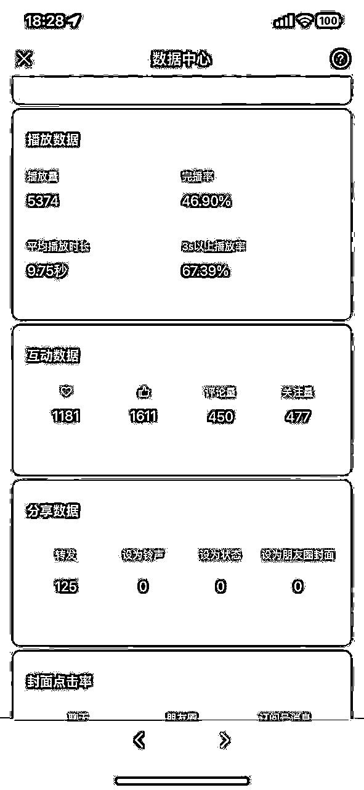
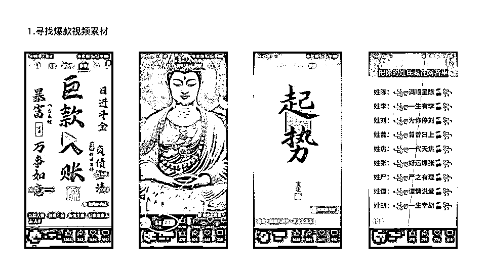
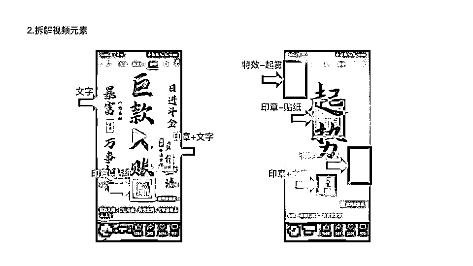
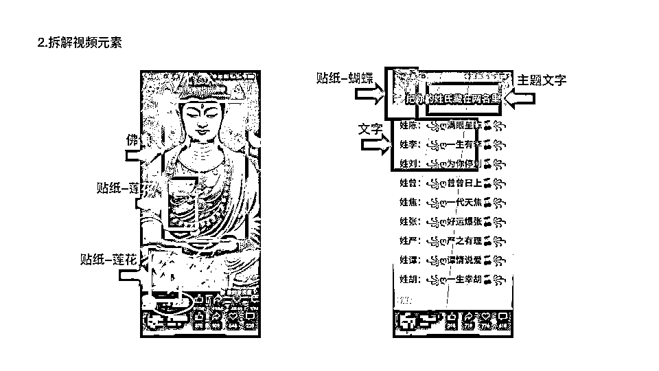

来源：https://htk589sgsw.feishu.cn/docx/N9uidQnNgoqfMaxizGFcnu0cnFg
首先，我来抛出一个问题，大家觉得涨一百粉难吗？自己破百粉用了多久呢？
在这里给大家看一下第一个账号我破百粉的时刻。

准确来说是涨了快500粉，这也是我第一条涨粉视频。
单视频仅仅用了8个小时涨粉500。转粉率差不多在15个浏览出一个关注。很可怕的数据呀
大家想知道这条涨粉视频背后的逻辑和具体操作是什么？
今天我分享的这本“小白涨粉秘籍”中共有七招武功
寻找当前在微信视频号上流行或受欢迎的视频

我们来看一下这几个爆款视频：数据都很不错，而且画面简单容易复制。
我们要找的就是这种简单粗暴的爆款视频。
这里回答一下大家：
实际我自己也没有想过，但是我有一个认知：
爆款肯定有爆的理由，咋们就不要想这些。直接拆解，不想为什么。先模仿再说。在模仿路上发现成功的关键。
分析并提取视频中的关键元素，如文字、贴纸、主图等

我们看一下这种壁纸爆款视频的元素，实际上就是由四五个元素构成的：

这两个视频也是一样，所以这种视频基本上都有由这五个元素构成。
我们做视频也是一样，拼接缝合这五个元素即可。
运用AI工具快速创建或优化图像
为什么用AI？怎么用？
两句话说明白：
这是我做的财神素材，一个出四个，直接进我的素材库。
（最近剪映这个功能免费，这种工具太多了不要限制，我只是觉得剪映方便）
使用剪映等视频编辑软件进行视频制作
剪映等工具提供了丰富的编辑功能，帮助制作更加专业和吸引人的视频，主要原因是剪映是目前最简单最容易操作的视频编辑软件了。
细化视频的视觉和听觉元素，如比例、时长、音乐等
首先我们先导入刚才用AI生成的图片，并且将将画面比例调整为9:16，其次把导入的元素先进行抠图，把图片的背景取掉，然后设置纯色背景，增加其他元素进行拼接缝合。
这招还有需要注意的地方：
1.调节元素的时长为8s-15s；
2.贴纸可以增加一下动画，让画面更生动；
3.元素图层的设置，主素材务必位于首层。
优化封面和发布文案
这一招也是制作爆款视频的核心，一个好的封面和文案是吸引观众点击的第一印象。
根据数据分析确定最佳发布视频的时间
测试不同时间发布视频，分析哪些时段流量最高，根据数据选择发布时间。
我测试了一下这种视频的发布时间节点，发现这四个时间比较容易推流量：
8:00、13:00、18:00、20:00
实际这些爆款视频就是祝福视频的升级版，万变不离其宗。
以上就是我本次分享的“武功秘籍”，希望大家不断参与、不断讨论、不断进步、不断赚钱！
制作微信视频号破百粉视频并非难事。
遵循这些步骤，快速制作高质量内容，吸引更多粉丝！🌈
我是之势，挑战自己，突破自己，一起成长。